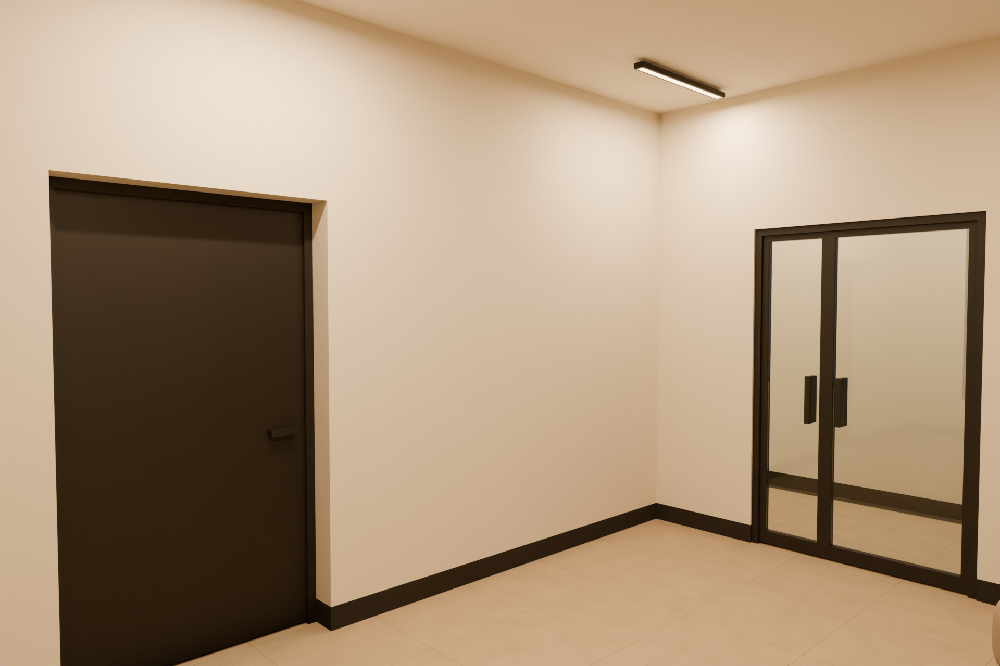
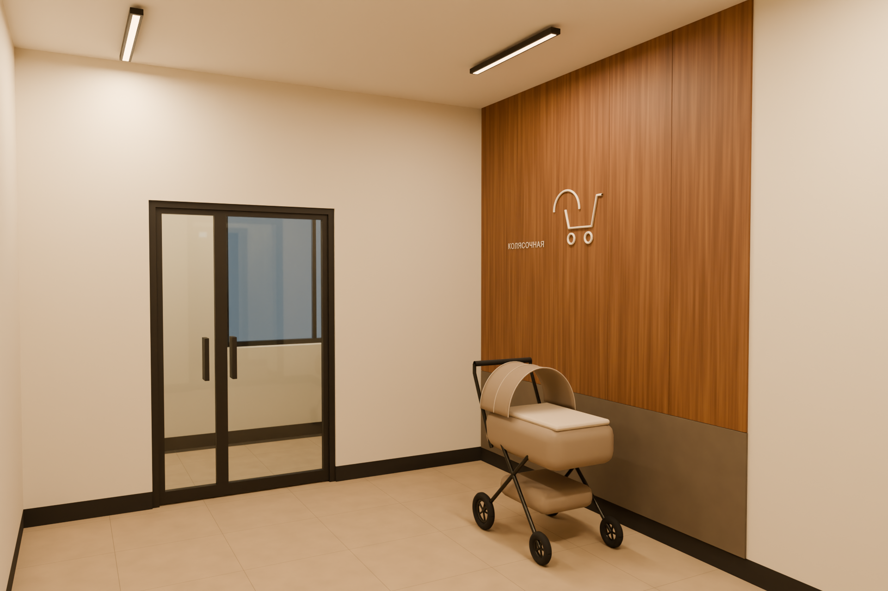
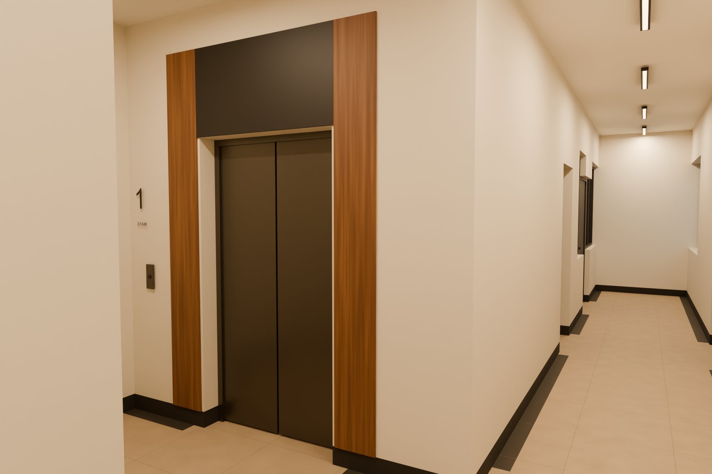
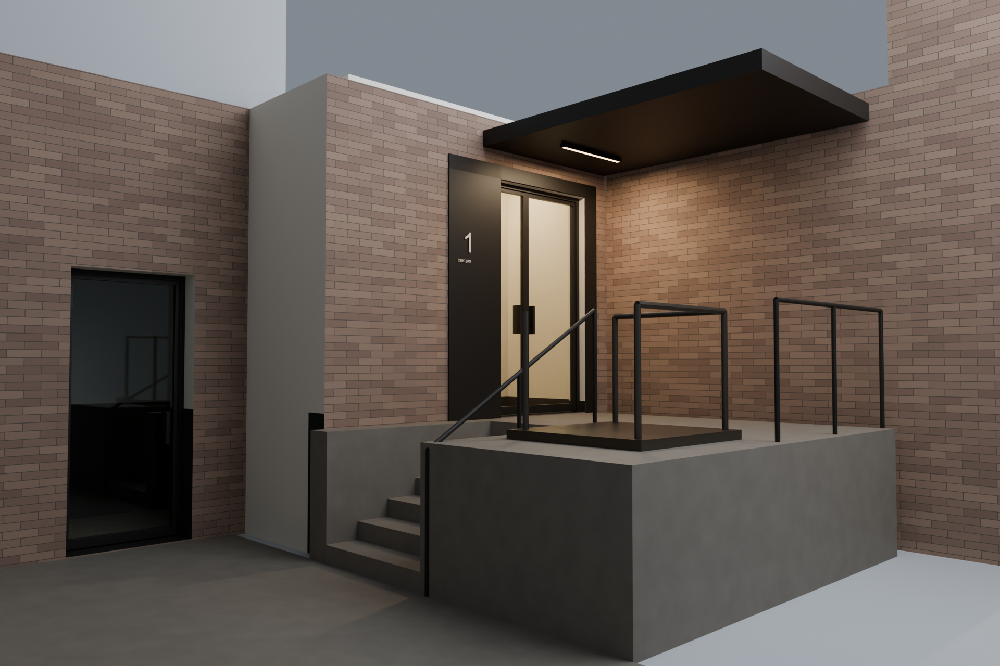

Секция 1.
Отделка и свет
Тёплые светлые стены, бежевый камень, сдержанные древесные акценты и графитовые детали. Открытая колясочная остаётся частью вестибюля; высота потолка — 3 м.


От входа в вестибюль
Вход в вестибюль. Слева — дверь к лестнице; справа — проход через остеклённую дверь в коридор.


Вестибюль и открытая колясочная
Открытая зона колясочной: защищённый низ стены, древесный акцент и одна коляска для масштаба.


Коридор и зона лифта
Лифт и продолжение коридора. Тёмный плинтус и полоса пола поддерживают единый рисунок.


Основной наружный вход и площадка
Основной вход выделен обрамлением, номером секции и светом под навесом. Левая дверь ведёт к нижнему уровню.
Расположение отделки

Палитра первого варианта
Это цветовые ориентиры без освещения. На ракурсах оттенки меняются под влиянием света и отражений. Для подбора материалов нужны образцы.
Материалы и места примененияУтверждённые ориентиры


Что согласовать по изображениям
Оттенок стен и пола, тон дерева, характер тёплого света, ритм светильников и заметность навигации. После ваших замечаний обновим комплект и зафиксируем стиль для секций 2 и 3.